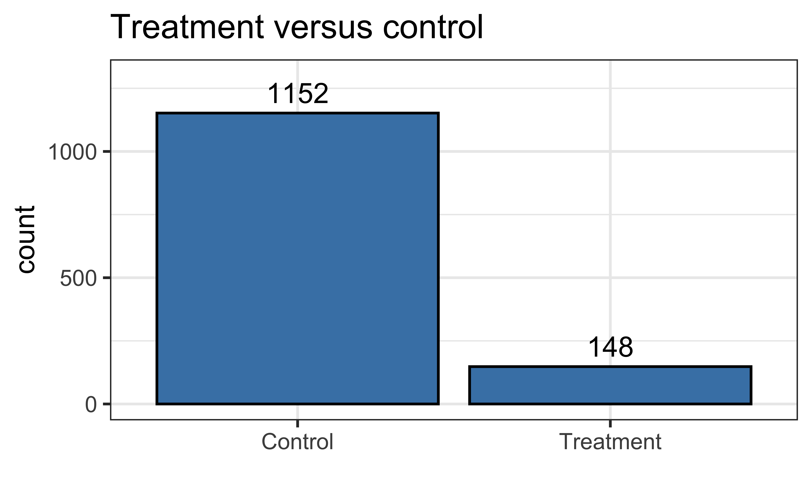
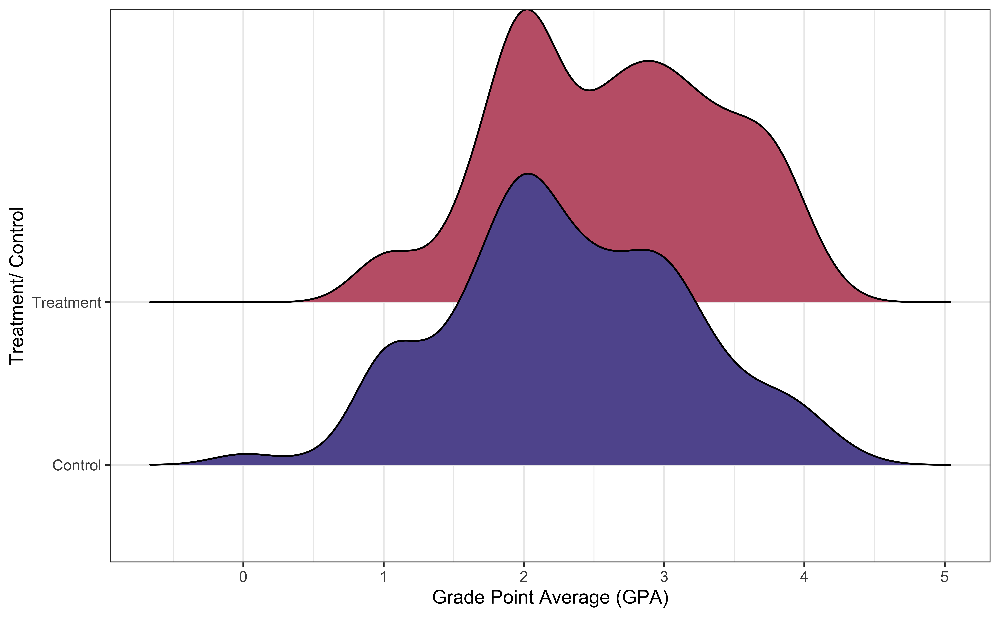
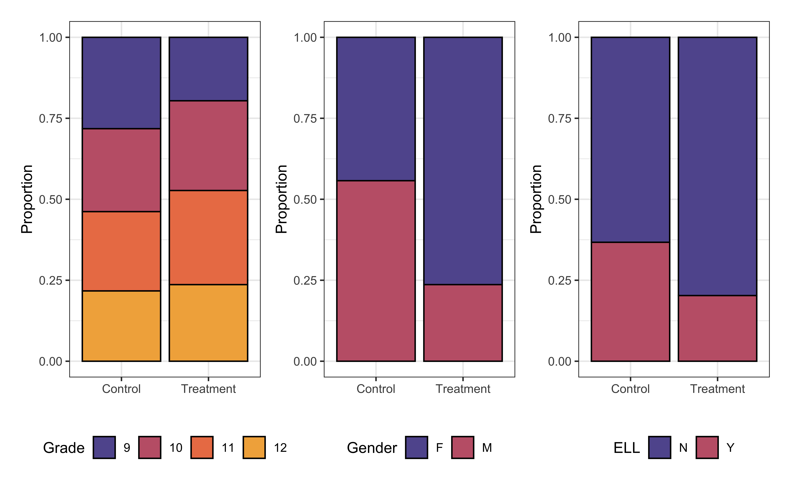
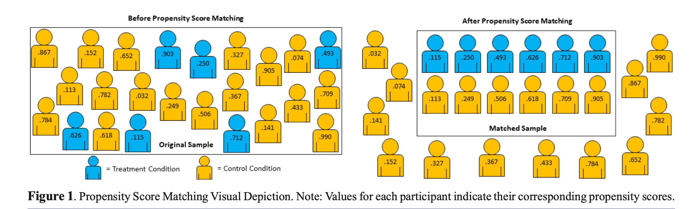
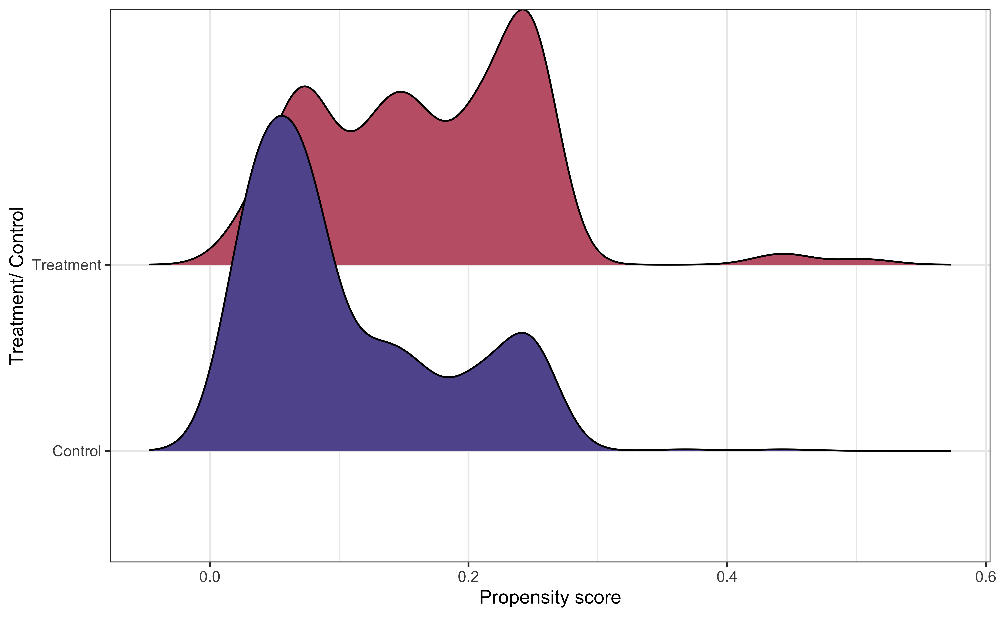
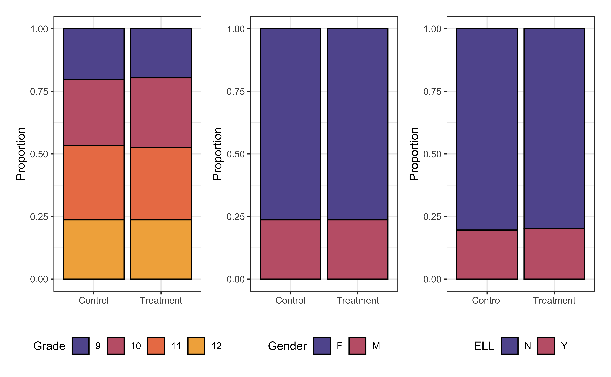

# load packages
library(tidyverse)
library(tidymodels)
library(knitr)
library(MatchIt) # for propensity score matching
library(ggridges)
library(patchwork)
# set default theme and larger font size for ggplot2
ggplot2::theme_set(ggplot2::theme_bw(base_size = 20))
# set color palettes
sunset2 <- PNWColors::pnw_palette("Sunset2",2)
sunset3 <- PNWColors::pnw_palette("Sunset2",3)
sunset4 <- PNWColors::pnw_palette("Sunset2",4)Causal inference
Announcements
Project:
Preliminary analysis due April 7
Presentations April 14 & 16
Statistics experience due April 15
Exam 02 April 9 (in-class), April 9 - 11 (take-home)
- Lecture recordings + practice questions available on website
Computational setup
Topics
Discuss data science ethics case study
Introduce causal inference for observational data
Use propensity scores to create a matched data set
Draw causal claims using the matched data
Data science ethics case study
A data scientist received permission to analyze a data set that was scraped from a social media site. The full data set included name, screen name, email address, geographic region, IP (internet protocol) address, demographic profiles, and preferences for relationships.
What are ethical considerations of putting a deidentified data set with name and email address removed in a LLM (e.g., Claude or ChatGPT) to help with analysis?
Adapted from Chapter 8 of Baumer, Kaplan, and Horton (2024)
Causal inference
Impact of Project ACE
Project Action for Equity (Project ACE) was a “five year interdisciplinary program aimed to get more underrepresented high school students from disadvantaged backgrounds to get interested in college degrees in engineering as well as biomedical and behavioral sciences” (Texas at El Paso College of Liberal Arts n.d.).
Our goal is to evaluate whether the data provide evidence that participating in Project ACE had a positive impact on students’ GPA.
The data were obtained from Evans, Perez, and Morera (2025), and the analysis in the lecture will closely follow the analysis in the original article.
Variables
The data are in project-ace-data.csv. We will use the following variables:
Grade: Grade level (9, 10, 11, 12)Gender: Gender (F, M)Ethnicity: Ethnicity (Hispanic, Non-Hispanic)ELL: Whether student is an English language learner (N, Y)Sped: Whether student is in a special education program (N, Y)Homeless: Whether student is homeless (N, Y)Tracking.Pathway: Whether student was in Project ACE (Treatment) or not (Control)Current.GPA: Grade Point Average (GPA) ranging 0 to 5.0
Glimpse of data
Rows: 1,300
Columns: 13
$ Student.ID <dbl> 3955, 7008, 7791, 59…
$ Grade <fct> 12, 11, 11, 10, 11, …
$ Gender <chr> "F", "M", "M", "M", …
$ Race <chr> "C", "C", "C", "C", …
$ Ethnicity.Hispanic.Y.N <chr> "Hispanic", "Hispani…
$ ELL <chr> "Y", "Y", "Y", "Y", …
$ Sped <chr> "Y", "Y", "N", "Y", …
$ Homeless <chr> "N", "N", "N", "N", …
$ Free.Lunch <chr> "Y", "Y", "Y", "Y", …
$ Migrant <chr> "N", "N", "N", "N", …
$ Current.GPA <dbl> 3.455, 1.688, 2.233,…
$ Number.of.Classes.Enrolled.in.for.the.school.year <dbl> 7, 7, 7, 7, 7, 7, 7,…
$ Tracking.Pathway <fct> Control, Control, Co…Distribution of tracking pathway

Distribution of GPA

How does the distribution of GPA compare between the two groups?
Covariates by tracking pathway

Try a model
| term | estimate | std.error | statistic | p.value |
|---|---|---|---|---|
| (Intercept) | 2.391 | 0.054 | 44.383 | 0.000 |
| Grade10 | 0.251 | 0.061 | 4.106 | 0.000 |
| Grade11 | 0.310 | 0.062 | 5.024 | 0.000 |
| Grade12 | 0.409 | 0.064 | 6.400 | 0.000 |
| GenderM | -0.267 | 0.046 | -5.844 | 0.000 |
| Ethnicity.Hispanic.Y.NNon Hispanic | 0.049 | 0.184 | 0.268 | 0.789 |
| ELLY | -0.307 | 0.048 | -6.401 | 0.000 |
| SpedY | -0.258 | 0.061 | -4.199 | 0.000 |
| HomelessY | -0.163 | 0.222 | -0.737 | 0.461 |
| Tracking.PathwayTreatment | 0.140 | 0.071 | 1.967 | 0.049 |
Draw causal conclusion?
Why should we avoid using this model to conclude participation in Project ACE improved students’ GPAs?
Two types of data
Experimental data: Data obtained by explicitly applying a treatment
- Individuals randomly assigned to treatment or control groups
- Can draw causal conclusions, because we can assume the only difference between treatment and control groups is the treatment itself
Observational data: Data obtained without explicitly applying a treatment
Potential underlying factors that are confounded with response and likelihood of being in treatment group
Cannot draw causal conclusions from typical regression analysis
Causal conclusions from observational data
We will use statistical methods to make observational data look more like experimental data
We do so by making the treatment and control groups similar based on a set of covariates (variables) that impact both the response and the likelihood an individual is in the treatment group
We create these groups matching individuals in the treatment and control groups based on these underlying covariates
- We do so using propensity score matching
Propensity score matching
Propensity score: The probability an observation is assigned to the treatment group based on a set of confounding variables that directly impact the response and likelihood of being in the treatment group
Propensity score matching: Create a new data set by matching individuals in the treatment and control groups who have the same (or similar) propensity scores
Use the matched data set to model the effect of the treatment
Propensity score matching

Propensity score model
Code
propensity_score_model <- glm(Tracking.Pathway ~ Grade + Gender + Ethnicity.Hispanic.Y.N + ELL + Sped + Homeless,
data = project_ace,
family = "binomial")| term | estimate | std.error | statistic | p.value |
|---|---|---|---|---|
| (Intercept) | -1.670 | 0.216 | -7.733 | 0.000 |
| Grade10 | 0.539 | 0.264 | 2.040 | 0.041 |
| Grade11 | 0.566 | 0.263 | 2.155 | 0.031 |
| Grade12 | 0.314 | 0.273 | 1.151 | 0.250 |
| GenderM | -1.390 | 0.206 | -6.731 | 0.000 |
| Ethnicity.Hispanic.Y.NNon Hispanic | -0.498 | 0.775 | -0.643 | 0.520 |
| ELLY | -0.792 | 0.222 | -3.562 | 0.000 |
| SpedY | 0.017 | 0.277 | 0.060 | 0.952 |
| HomelessY | 1.126 | 0.649 | 1.734 | 0.083 |
Propensity scores
The propensity scores are the predicted probabilities from the logistic regression model
Code
# compute propensity scores
project_ace_aug <- augment(propensity_score_model,
type.predict = "response")
project_ace_aug |> slice(1:10)# A tibble: 10 × 13
Tracking.Pathway Grade Gender Ethnicity.Hispanic.Y.N ELL Sped Homeless
<fct> <fct> <chr> <chr> <chr> <chr> <chr>
1 Control 12 F Hispanic Y Y N
2 Control 11 M Hispanic Y Y N
3 Control 11 M Hispanic Y N N
4 Control 10 M Hispanic Y Y N
5 Control 11 M Hispanic N N N
6 Control 12 M Hispanic N Y N
7 Control 12 M Hispanic N N N
8 Treatment 12 M Hispanic N N N
9 Control 12 M Hispanic Y N N
10 Control 12 F Hispanic N N Y
# ℹ 6 more variables: .fitted <dbl>, .resid <dbl>, .hat <dbl>, .sigma <dbl>,
# .cooksd <dbl>, .std.resid <dbl>Common support
Common support: Individuals in the matched treatment and control groups have a non-zero probability of being in the treatment group

What do you observe from the visualization?
Why is common support important?
Propensity score matching in R
We conduct propensity score matching using matchit() from the MatchIt R package (will need to install in the RStudio Docker containers)
library(MatchIt)
# generate propensity scores and matches
project_ace_psm <- matchit(Tracking.Pathway ~ Grade + Gender + Ethnicity.Hispanic.Y.N +
Race + ELL + Sped + Homeless,
data = project_ace, method = "nearest", distance = "logit")
# matched data set
project_ace_matched <- match.data(project_ace_psm). . .
method = "nearest": Each observation in the treatment group is matched to the observation in the control group with closest propensity scoredistance = "logit": Generate the propensity scores using a logistic regression model
Matched data
How many observations are in the matched data set based on our matching process?
. . .
We’re using \(1:1\) matching, but there are other approaches such as \(1:k\) and weighting to reduce data loss
Matched data
Rows: 296
Columns: 16
$ Student.ID <dbl> 9478, 8268, 9846, 22…
$ Grade <fct> 12, 12, 12, 12, 11, …
$ Gender <chr> "M", "M", "F", "F", …
$ Race <chr> "C", "C", "C", "C", …
$ Ethnicity.Hispanic.Y.N <chr> "Hispanic", "Hispani…
$ ELL <chr> "N", "N", "N", "N", …
$ Sped <chr> "N", "N", "N", "N", …
$ Homeless <chr> "N", "N", "Y", "N", …
$ Free.Lunch <chr> "Y", "Y", "Y", "Y", …
$ Migrant <chr> "N", "N", "N", "N", …
$ Current.GPA <dbl> 1.452, 2.957, 2.955,…
$ Number.of.Classes.Enrolled.in.for.the.school.year <dbl> 7, 7, 7, 7, 7, 7, 7,…
$ Tracking.Pathway <fct> Control, Treatment, …
$ distance <dbl> 0.05897680, 0.058976…
$ weights <dbl> 1, 1, 1, 1, 1, 1, 1,…
$ subclass <fct> 1, 1, 42, 3, 2, 2, 4…Example matches
| subclass | Tracking.Pathway | distance | Grade | Gender | Ethnicity.Hispanic.Y.N | ELL | Sped | Homeless |
|---|---|---|---|---|---|---|---|---|
| 14 | Control | 0.3786138 | 9 | F | Hispanic | N | N | Y |
| 14 | Treatment | 0.4507080 | 12 | F | Hispanic | N | N | Y |
| 50 | Control | 0.2496294 | 11 | F | Hispanic | N | N | N |
| 50 | Treatment | 0.2496294 | 11 | F | Hispanic | N | N | N |
| 118 | Control | 0.1585438 | 9 | F | Hispanic | N | N | N |
| 118 | Treatment | 0.1585438 | 9 | F | Hispanic | N | N | N |
Covariates by group in matched data

Fit the treatment model
Use matched data set to fit the treatment model.
treatment_model <- lm(Current.GPA ~ Tracking.Pathway,
data = project_ace_matched)| term | estimate | std.error | statistic | p.value |
|---|---|---|---|---|
| (Intercept) | 2.418 | 0.069 | 35.043 | 0.000 |
| Tracking.PathwayTreatment | 0.209 | 0.098 | 2.138 | 0.033 |
Describe the effect of Project ACE on GPA. Is there evidence that participating in the program has a positive impact on GPA?
Average treatment effect
- The model produces the average treatment effect on the matched population
- The results may not generalize to the entire population if the observations removed from the analysis are systematically different than the observations in the matched data
- Strategies such as \(1:k\) matching and weighting can mitigate this limitation
Recap
Introduced causal inference for observational data
Used propensity scores to create a matched data set
Drew causal claims using the matched data
Further reading
All books are freely available online.
Causal Inference: The Mixtape by Scott Cunningham
The Effect: An Introduction to Research Design and Causality by Nick Huntington-Klein
Causal Inference in R by Malcolm Barrett, Lucy McGowan, Travis Gerke
Exam 02 review
We will do Exam 02 review in lab on Monday, April 6 and lecture on Tuesday, April 7. Exam 02 covers content from multicollinearity (February 24) - today.
Please submit one question you have about the Exam 02 content. I will use these questions to write the exam reviews.
Next class
Exam 02 review
No prepare assignment
References
Baumer, Benjamin S, Daniel T Kaplan, and Nicholas J Horton. 2024. Modern Data Science with r. 3rd ed. https://mdsr-book.github.io/mdsr3e/.
Evans, Nicholas D, Perla C Perez, and Osvaldo F Morera. 2025. “Testing the Efficacy of Educational Interventions on Matched Student Samples: A Primer for Propensity Score Matching in r.” Journal of STEM Outreach 8 (1): 1–9.
Texas at El Paso College of Liberal Arts, The University of. n.d. “Project ACE: Action for Equity.” https://www.utep.edu/liberalarts/project-ace/.